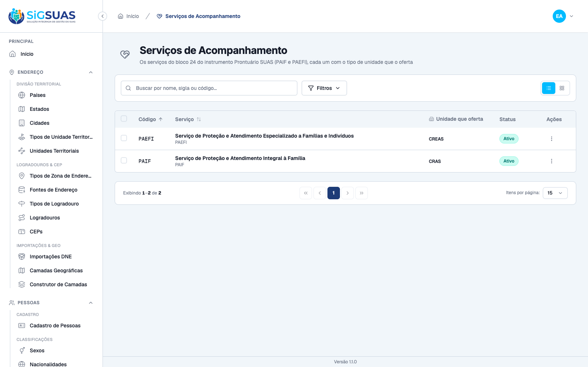
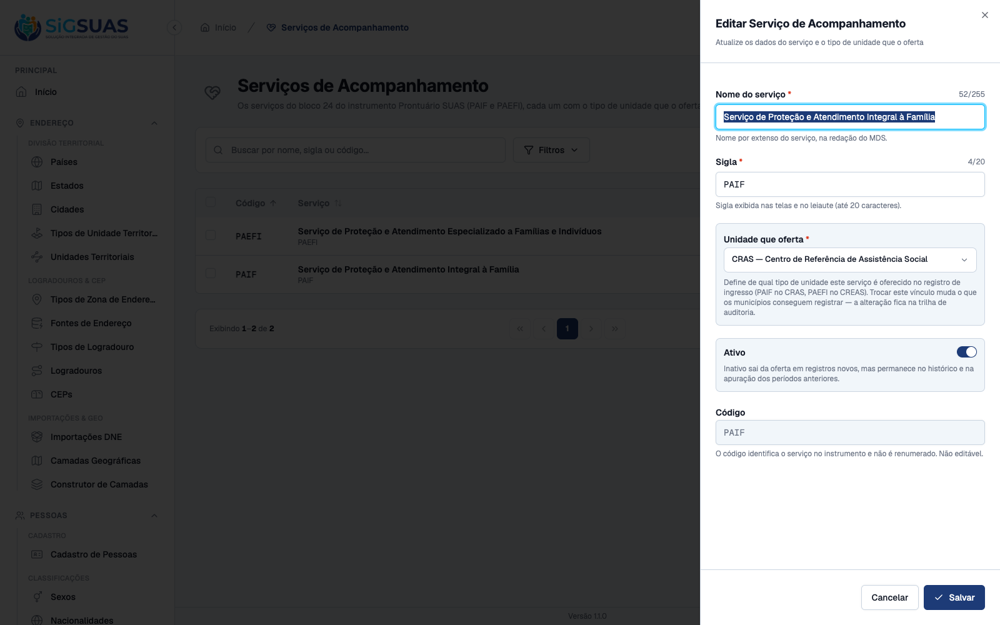
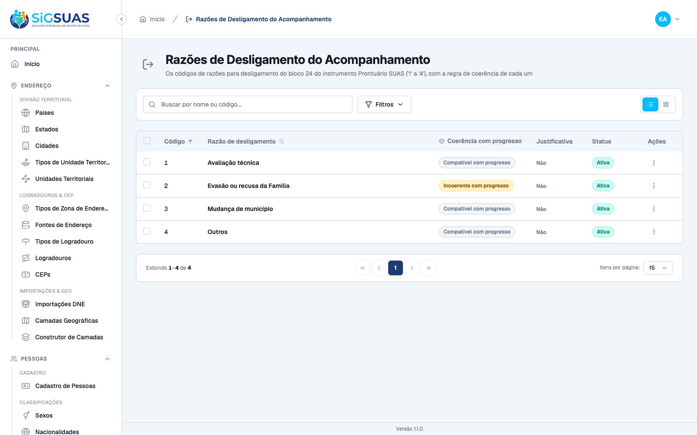
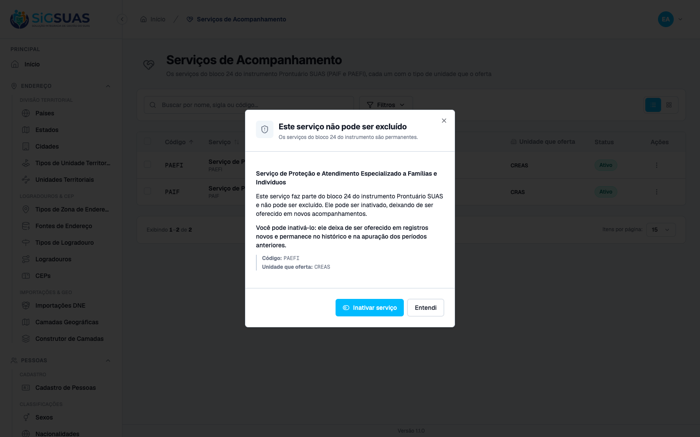
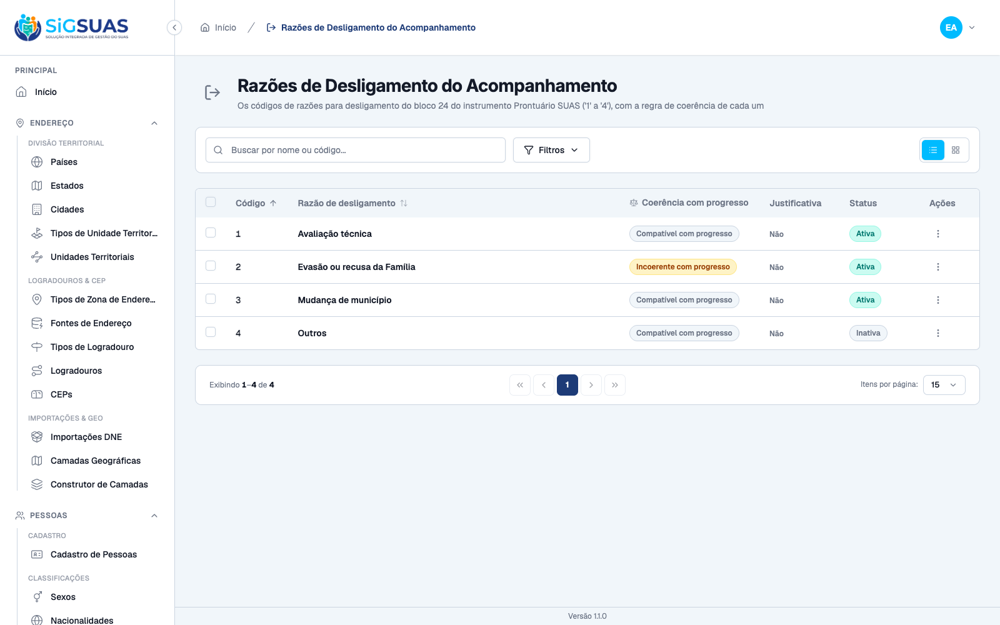
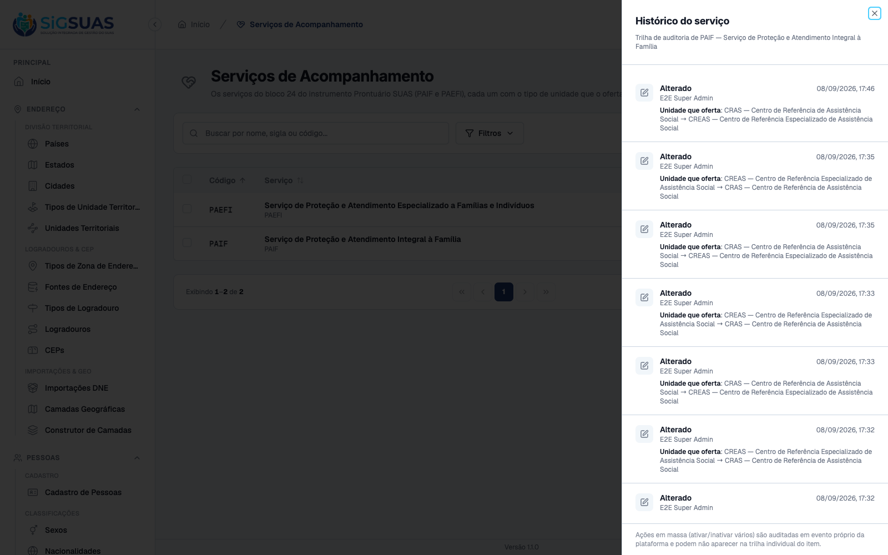

Sete critérios de aceite, todos atendidos. Seis evidenciados no navegador (CA01, CA02, CA03, CA05, CA06 e CA07 — seis prints) e um coberto apenas pela suíte automatizada (CA04). A suíte Pest dos domínios fecha com 43 testes e 235 asserções, e os 8 cenários Playwright de e2e/tests/lookups/follow-up-domains.spec.ts passam contra a mesma stack. O CA06 recebeu, depois da entrega da US-ACOMP-05, o teste que faltava sobre a apuração. Nenhum critério em falha.
| CA | Critério | Status |
|---|---|---|
| CA01 | Serviços disponíveis, com o nome por extenso do MDS | ATENDIDO · navegador |
| CA02 | Vínculo com o tipo de unidade visível na listagem e no detalhe | ATENDIDO · navegador |
| CA03 | Razões de desligamento com os códigos do instrumento, sem renumeração | ATENDIDO · navegador |
| CA04 | Município não edita as listas | ATENDIDO · automatizado |
| CA05 | Item em uso não é excluído — a recusa orienta a inativar | ATENDIDO · navegador |
| CA06 | Item inativado continua no histórico e na apuração | ATENDIDO · navegador + automatizado |
| CA07 | Alteração do vínculo auditada, com autor e data | ATENDIDO · navegador |
Critério (Gherkin): Dado que sou Administrador no Painel de Administração Global Quando eu consultar o cadastro de serviços de acompanhamento Então vejo PAIF e PAEFI, com o nome por extenso de cada um.
Como foi testado: Autenticado como Super Admin, abrir /app/follow-up-services.

Critério (Gherkin): Dado que estou consultando os serviços Quando eu abrir o detalhe de cada um Então PAIF consta vinculado ao tipo de unidade CRAS E PAEFI consta vinculado ao tipo CREAS.
Como foi testado: Na listagem, conferir a coluna de tipo de unidade; abrir Editar no PAIF para ver o campo no detalhe.

Critério (Gherkin): Dado que estou consultando o cadastro de razões de desligamento Quando eu abrir a lista Então vejo as quatro razões, com os códigos 1 a 4 do instrumento E os códigos não foram renumerados.
Como foi testado: Abrir /app/follow-up-exit-reasons e extrair a coluna de código da tabela.

Critério (Gherkin): Dado que sou Master no Painel do Tenant Quando eu procurar onde alterar serviços ou razões de desligamento Então a ação não existe para mim.
Como foi testado: Coberto pela suíte Pest — ver apêndice. Não há evidência de navegador porque o critério é a ausência de uma rota no guard client, e o Painel do Tenant não tem tela para estes cadastros.
Evidência por cobertura automatizada — ver Anexo.
Critério (Gherkin): Dado que a razão “Evasão ou recusa da Família” já foi usada em desligamentos Quando eu tentar excluí-la Então a exclusão é recusada E o sistema indica que ela pode ser inativada.
Como foi testado: No menu de ações de um serviço, acionar Excluir e observar simultaneamente a resposta HTTP e o que a tela mostra.

Critério (Gherkin): Dado que inativei uma razão já usada Quando eu consultar os desligamentos registrados com ela Então continuam listados com essa razão E continuam contando no período em que ocorreram.
Como foi testado: Inativar a razão de código 4 e reconferir a listagem.

Critério (Gherkin): Dado que alterei o tipo de unidade vinculado a um serviço Quando eu consultar a trilha de auditoria Então a alteração consta, com autor e data.
Como foi testado: Editar o PAIF trocando Unidade que oferta de CRAS para CREAS, salvar, e abrir Ver histórico. A alteração foi revertida após a captura.

O ramo *_in_use do CA05 continua sem exercício em produção por decisão declarada: os dois serviços de uso nascem com a lista de consumidores vazia (CONSUMERS = []), e é a US-ACOMP-02/03 que vai registrá-los. Hoje a exclusão já é recusada — pelo motivo *_instrument_bound, que vale para todo item do bloco 24 —, então o desfecho do critério (recusa + orientação a inativar) se verifica; o que não se verifica é o caminho específico do uso registrado. Está declarado, não escondido.
A ressalva que este dossiê trazia sobre o CA06 foi fechada: a apuração da US-ACOMP-05 existe e o critério passou a ter teste próprio (ver o anexo).
Três nomes da especificação não sobreviveram ao molde real do projeto e foram corrigidos: a permissão da trilha é view-activity (não .activity, que é o nome da rota); um único bulk-update cobre ativar e inativar em massa; e o guard client responde 401 nas rotas de escrita, não 404. São 14 permissões no total (7 por recurso), não 16.
Três arquivos precisaram ser tocados além do previsto, todos por razões de segurança ou de harness: PermissionRegistry (sem a entrada em CLIENT_READ_ONLY_RESOURCES, o Operacional do Tenant herdaria a escrita dos dois cadastros); RoleSeeder (sem ela o Operacional Global ficava com zero permissões e tomava 403 no GET); e E2ESeeder (sem ela as telas abririam vazias no harness e os cenários E2E cairiam todos em skip).
CardGrid do módulo de serviços — nunca iniciado.PASS Tests\Unit\FollowUpUsageServiceTest ✓ it nasce sem consumidores declarados nos dois servicos (a US-ACOMP-… 1.72s ✓ it sem consumidores, nenhum servico esta em uso — a recusa sai como… 0.05s ✓ it sem consumidores, nenhuma razao esta em uso — a recusa sai como… 0.02s ✓ it reconhece o servico referenciado por um consumidor registrado 0.02s ✓ it reconhece a razao referenciada por um consumidor registrado 0.02s ✓ it ignora consumidor cuja tabela ainda nao existe, sem estourar 0.03s ✓ it devolve lista vazia quando nenhum uuid e informado 0.02s PASS Tests\Feature\Manager\FollowUpExitReasonTest ✓ it lista exatamente as quatro razoes com os codigos do instrumento,… 0.07s ✓ it nunca expoe o id no payload da razao 0.03s ✓ it marca a incoerencia com progresso significativo apenas na razao… 0.03s ✓ it nasce com requires_description inerte nas quatro razoes 0.03s ✓ it nao expoe rota de criacao de uma quinta razao 0.03s ✓ it colhe as sete abilities das rotas da razao e nao cria store 0.05s ✓ it nao oferece escrita da razao ao guard client, mas mantem a leitu… 0.03s ✓ it recusa a exclusao de razao sem uso com o motivo de vinculo ao in… 0.03s ✓ it recusa a exclusao da razao ja usada em um desligamento 0.03s ✓ it recusa a exclusao em massa de razoes item a item, sem excluir na… 0.04s ✓ it mantem a razao inativada na leitura e no historico, tirando-a so… 0.08s ✓ it atualiza a razao e audita a alteracao com autor, valor antigo e… 0.03s ✓ it recusa renumerar uma razao para um codigo ja ocupado 0.03s ✓ it bloqueia quem nao tem a permissao de escrita da razao 0.03s ✓ it nao tem tenant_id nem BelongsToTenant na razao 0.02s ✓ it roda o seeder de razoes duas vezes sem duplicar nem desfazer a e… 0.02s PASS Tests\Feature\Manager\FollowUpServiceTest ✓ it lista exatamente os dois servicos do bloco 24, com code e nome p… 0.04s ✓ it nunca expoe o id no payload do servico 0.03s ✓ it traz o tipo de unidade que oferta cada servico, resolvido por co… 0.03s ✓ it filtra os servicos ofertados por um tipo de unidade (predicado d… 0.03s ✓ it nao expoe rota de criacao de um terceiro servico 0.03s ✓ it colhe as sete abilities das rotas do servico e nao cria store 0.03s ✓ it nao oferece escrita ao guard client, mas mantem a leitura via sh… 0.04s ✓ it recusa a exclusao de servico sem uso com o motivo de vinculo ao… 0.03s ✓ it recusa a exclusao de servico em uso com o motivo de uso registra… 0.03s ✓ it recusa a exclusao em massa item a item, sem excluir nada 0.03s ✓ it atualiza o nome do servico sem tocar no code normativo 0.03s ✓ it recusa desvincular o servico do tipo de unidade (coluna NOT NULL… 0.03s ✓ it recusa dois servicos com o mesmo code 0.04s ✓ it inativa e reativa servicos em massa sem removê-los da leitura 0.03s ✓ it audita a troca do tipo de unidade com autor, valor antigo e novo 0.04s ✓ it bloqueia quem nao tem a permissao de escrita do servico 0.04s ✓ it da ao ADMIN as sete permissoes e ao ADMIN_OPERADOR apenas leitur… 0.83s ✓ it nao da a nenhum papel do guard client permissao de escrita dos d… 0.96s ✓ it nao tem tenant_id nem BelongsToTenant no servico 0.03s ✓ it roda o seeder de servicos duas vezes sem duplicar nem desfazer a… 0.03s Tests: 43 passed (235 assertions) Duration: 5.33s ──────────────────────────────────────────────────────────────────────── Complemento do CA06 — a apuração ignora `is_active` dos lookups (US-ACOMP-05 · FollowUpReportService, Q5 do leiaute 15.6) ──────────────────────────────────────────────────────────────────────── php vendor/bin/pest tests/Feature/Client/FollowUpReportServiceTest.php --filter="inativados" PASS Tests\Feature\Client\FollowUpReportServiceTest ✓ it conta o mes do desligamento mesmo apos a razao e o servico serem… 0.32s Tests: 1 passed (2 assertions) Duration: 0.38s